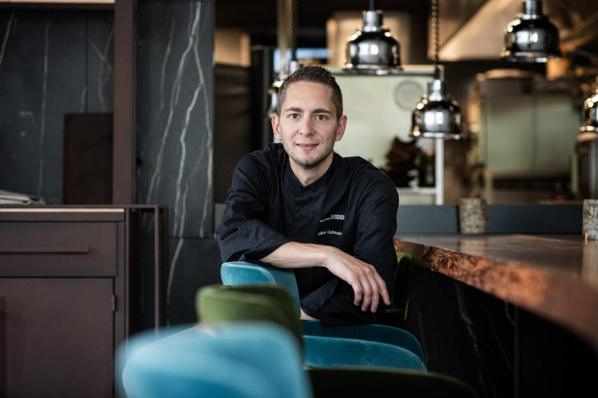

Le produit & la nature
Le végétal, les saisons, la matière et le vivant comme inspirations. Des assiettes belles, lisibles et gourmandes.
Une cuisine exigeante de haute précision,
servie avec la simplicité d'une maison qui aime recevoir.
Le lieu
Nous avons imaginé Orée comme une table où l'on se sent bien. Notre générosité se retrouve dans notre façon de recevoir et de cuisiner. Au fil des saisons, nous préparons chaque plat avec soin, pour le plaisir de bien manger.
Notre carte s'inspire de la forêt, des balades et des cueillettes. La cuisine est exigeante, l'expérience est détendue.
Le végétal, les saisons, la matière et le vivant comme inspirations. Des assiettes belles, lisibles et gourmandes.
Un accueil attentif, avec le sourire et la simplicité. Une salle où l'on se sent immédiatement à sa place.
Une cuisine très précise qui reste généreuse et lisible. La technique s'efface derrière le plaisir.
Orée a pris place dans le domaine de la Fondation d'Art Christian Réal, à Annecy-le-Vieux. Une cour pavée, des charpentes anciennes, des pierres apparentes : l'entrée d'un nouveau chapitre, à la lisière de l'abbaye.
La carte
Le midi
Chaque midi, notre équipe vous présente de vive voix le plat du jour, inspiré par la saison. Vous choisissez ensuite une entrée et un dessert à la carte.
Entrée, plat, dessert
Composez votre menu au gré de vos envies : une entrée, un plat et un dessert choisis à la carte.
Le soir
Le soir, laissez-vous guider sur les sentiers d'un menu en cinq temps.
Carotte marinée, cédrat et pollen
Corne d'abondance, royale d'épicéa et bouillon de lard
Poires confites, mousse légère à la vanille de Tahiti
Caramel praliné coulant, biscuit dacquoise et mousseline noisette
Poireau au barbecue, giancale de la maison Baud et sauce safranée
Cuit sur le coffre, la cuisse confite, oignon brûlé et jus de canard
Une création à découvrir chaque jour auprès de notre équipe

L'équipe
Formé en alternance à l'école Ferrandi Paris, où il a été élu Meilleur Apprenti de France, Julien a fait ses armes dans la brigade du Mandarin Oriental de Thierry Marx, au Greenhouse à Londres (2 étoiles), puis au Japon au restaurant Kichisen (3 étoiles). Il a ensuite été sous-chef en Relais & Châteaux, au Jiva Hill puis au Domaine des Hauts de Loire (2 étoiles).
Sa cuisine repose sur la passion du produit et la culture du détail.
Mardi au samedi · 12h00 – 21h30
ou par téléphone au 04 50 55 78 90
15 chemin de l'abbaye
74940 Annecy-le-Vieux